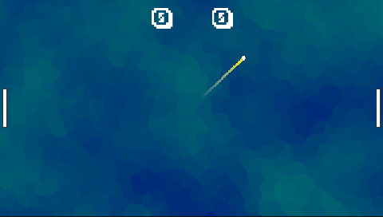
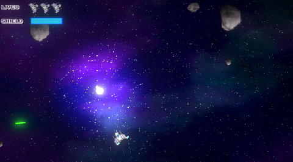
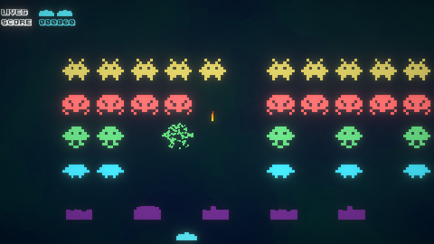
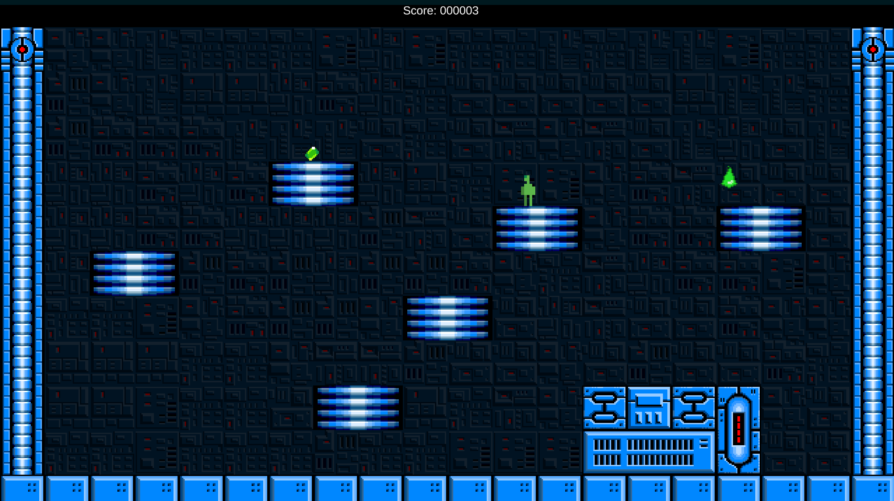
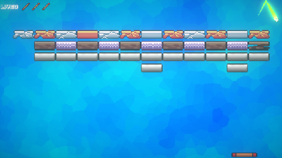
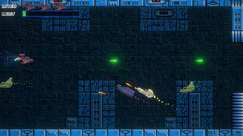
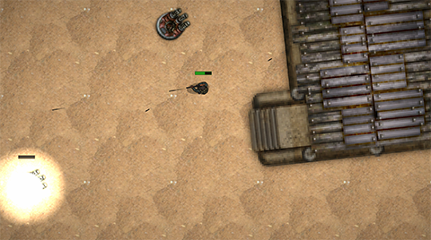
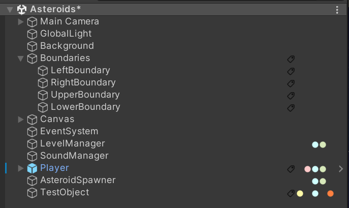
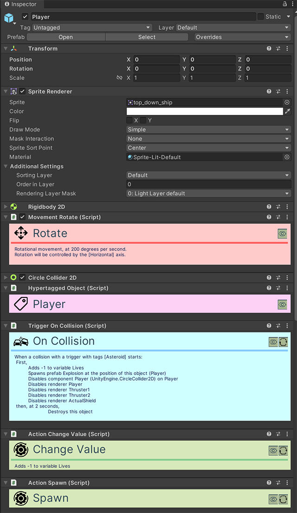

Jogos de Exemplo (Samples)
O OkapiKit inclui uma pasta chamada OkapiKitSamples com vários jogos de exemplo completos. Estes exemplos são a melhor maneira de aprender como combinar diferentes componentes para criar mecânicas de jogo reais.
Pode encontrar estes exemplos em: Assets/OkapiKitSamples/
Lista de Jogos e Componentes Usados
Aqui estão os principais exemplos incluídos e uma breve descrição do que poderá aprender com eles:
1. Pong

O clássico jogo de ténis para dois jogadores.
- Componentes Chave:
- Movement-XY: Usado nas raquetes para subir e descer.
- Movement-Forward: Usado na bola para manter uma velocidade constante.
- Trigger-On-Collision: Para detetar o toque na raquete e fazer a bola ressaltar.
- Action-Change-Value: Para atualizar a pontuação dos jogadores.
2. Asteroids

Jogo de naves onde tem de destruir asteroides e evitar colisões.
- Componentes Chave:
- Movement-Forward & Movement-Rotate: Para controlar a inércia e rotação da nave.
- Trigger-On-Input: Para disparar lasers (tecla Espaço).
- Action-Spawn: Para criar os projéteis no bico da nave.
- Action-Destroy-Object: Usado quando um asteroide é atingido.
3. Space Invaders

Defenda a terra de hordas de alienígenas que descem no ecrã.
- Componentes Chave:
- Trigger-On-Timer: Para controlar a cadência de tiro dos inimigos.
- Movement-XY: Para o movimento lateral do jogador e dos aliens.
- Action-Change-Scene: Para mudar de nível ou mostrar o ecrã de "Game Over".
4. Platformer

Um exemplo de jogo de plataformas estilo Mario.
- Componentes Chave:
- Movement-Platformer: O componente principal para saltos, gravidade e corrida.
- Trigger-On-Collision: Para detetar se o jogador caiu em espinhos ou tocou num inimigo.
- Action-Animation: Para gerir as animações de andar, saltar e estar parado.
5. Breakout

Destrua blocos com uma bola e uma raquete.
- Componentes Chave:
- Movement-XY: Para a raquete do jogador.
- Trigger-On-Collision: Para detetar o impacto nos blocos.
- Action-Destroy-Object: Para remover os blocos atingidos.
- Action-Play-Sound: Efeitos sonoros em cada impacto.
6. Side Shooter

Um "Shoot 'em up" horizontal.
- Componentes Chave:
- Action-Spawn: Para criar inimigos e projéteis.
- Movement-Forward: Para o movimento automático dos inimigos da direita para a esquerda.
- UI (Value-Display-Text): Para mostrar a vida e pontuação no ecrã.
7. Commando

Um jogo de ação top-down.
- Componentes Chave:
- Movement-XY: Para controlo do personagem em todas as direções.
- Trigger-On-Collision: Para detetar balas inimigas ou itens.
- Action-Change-Resource: Para gerir a vida e munição.
- Action-Animation: Para trocar entre as direções dos sprites de movimento.
8. Grid Movement
Demo técnica sobre jogos que funcionam numa grelha.
- Componentes Chave:
- Movement-Grid-XY: Para movimento casa-a-casa.
- Trigger-On-Grid-Event: Para detetar quando o jogador chega a uma célula específica.
Estrutura do Projeto e Componentes
Abaixo pode ver como o projeto está organizado no Unity.

Cada GameObject (objeto do jogo) funciona através da combinação de vários componentes no Inspector.

Como pode ver na imagem acima, um único objeto pode ter uma pilha de comportamentos (Actions, Triggers, Movement) que definem a sua lógica sem necessidade de código.
Como Explorar os Samples
- Abra a Cena: Na pasta de cada jogo, abra o ficheiro
.unity(ex:Pong.unity). - Selecione Objetos: Clique no Jogador ou nos inimigos na Hierarquia.
- Examine o Inspector: Veja como os componentes Okapi estão configurados e como estão ligados entre si.
- Experimente: Altere valores no Inspector e prima Play para ver o efeito imediato no jogo.